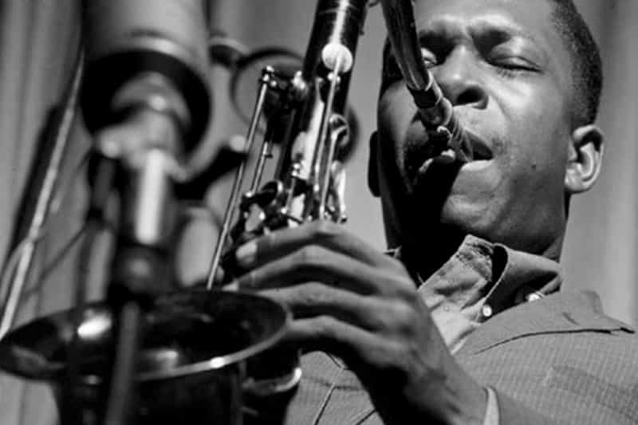
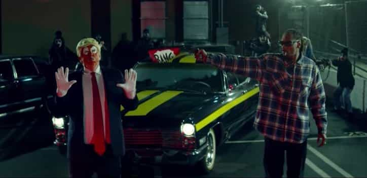
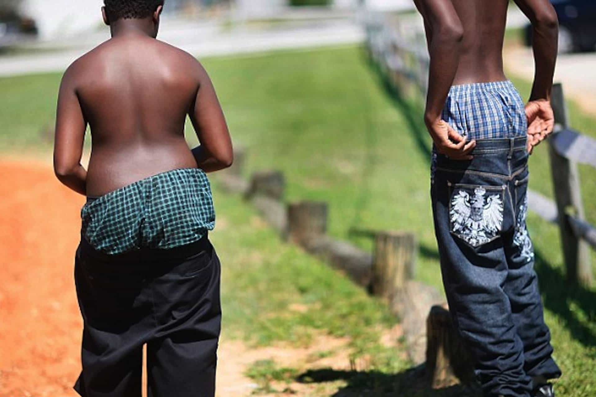

Mr. Luthra is an author and artist who writes about news, fitness, culture, and anything else that meets his interests. If you like his style, visit The Straightforward Voice, where you can find more FREE content.


From John Coltrane creating masterpieces with a saxophone to Michael Jackson grabbing his genitalia with a white glove, black sentiment and culture can be studied through their music. It is currently at the lowest point in their history.

Jazz and funk used to be popular genres. During a time when it was safer to go to clubs, disco was it. And some of the greatest musicians of this era were in fact black. The stuff they produced was amazing and puts today’s rappers to shame.
John Coltrane – Giant Steps
It’s hard to find another musician who can match Coltrane’s skill on a saxophone. Do you hear any rappers doing this kind of performance anymore? Nope.
Kool & The Gang – Summer Madness
CD 101.9 was once a popular smooth jazz station, but got replaced by the crap millennials listen to. Songs like this were played, perfect for a drive on a hot day or even just to chill out. You can actually feel your mind going to a higher level as you listen to it.
George Duke – Summer Breezin
Back when the afro was popular, Duke dished out this relaxing tune.
Najee – Betcha Don’t Know
Released in the 90’s, this hit was not that long ago, which goes to show you just how fast the music world has fallen to a level that is no longer recognizable to its predecessors.
Was (Not Was) performing Walk The Dinosaur
Yes there were girls showing skin, but it good clean fun without perverted ideograph and zooming in of butts and thighs.
If you like music like this, checkout my playlist.
Jail, shooting people, promiscuous sex, and glorifying the thug ghetto gangster lifestyle is essentially what the music is about.
Snoop Dogg – Lavender

Snoop Dogg, a dog trapped in a human body, thinks it was fine to make a video pointing a gun to a Trump figure.
I lost count how many times curse words are used. Apparently, rappers these days are incapable of saying one sentence without “mother f#$ker” or some other foul language.
Rappers are promoting violence and degeneracy whether they realize it or not. It is encouraging the black youth to identify themselves with the gangster image and to treat women, white or black, as ‘hoes”.
This is what passes as “music” today. Misguided souls think this is just expression of “art.”
Well perhaps art means something else today.
Candy Shop by 50 Cent (even though it’s pronounced Fifty Cents)
I once showed this video to a Pleiadian friend of mine who was visiting at the time (long story) who had never seen anything like it before. His comment was, “This is lowest consciousness.”
Ludacris – What’s Your Fantasy
There’s no point or purpose to this song, just hopping around like a clown with paid-off bimbos. Pretty much all of the big-name rappers rip music off of real musicians. You’re listening to a breed of “musicians” who can’t even play an instrument, taking the tunes from others and spitting out rap about grinding with women, slapping hoes, and drugs.
I once found a female friend of mine in college listening to this Missy Elliot “Work It” song. She was always moody and depressed from all the failed relationships she had with guys from parties, clubbing, and alike. Listening to this, is it any wonder why today’s youth are so confused?
Papa Singh once yelled at me pretty good in front of my friends when he heard Twista’s “Slow Jamz” as I was flipping through stations in the car. Most responsible parents don’t want their children listening to this garbage, because they know what it does to the mind.
Does this mean all rap is bad? Certainly not, however, it’s quite rare to find songs that are free of cursing, $2 trash girls, and drugs. One that I remember that was acceptable, was the theme from the first Teenage Mutant Ninja Turtles movie. As cheesy as it may be, it has far more creative lyrics compared to what is produced today.
That goes to show you just how low the genre has fallen that you have turn to a kid’s movie to find something that is of some decency.

It’s created a generation of domestic terrorists. Criminals, to be frank. Kids that seek to attain the same low-life desires portrayed in these videos. Some are even glorifying the criminal image, stating it naturally attracts girls. Yes, but take a good look at what kind of girls are attracted to these thugs, and then think whether or not you want to adopt that image. You can still be a bad boy without being a gangster.
Too many kids are imitating this criminal lifestyle. It has infected the Western world all over from America to England and even New Zealand.
I have heard claims that rap is part of ancient African culture and that I’ve offended them. Well, how come you don’t see traditional tribesman in Africa dressed up like gangstas?
Anyone who’s ever been to Africa will tell you that when you arrive, they greet you in their traditional attire and perform old ritual dances which don’t include any cuss words or rapping.
During one semester, I watched a real African group that performed their traditional dance. It was refreshingly amazing—the performers actually had skill playing those drums by hand while you had real women dancers with rhythm. Nothing like what you see in America. It’s hard to find good examples online, but this is closest I could find…
Black kids should watch this then rap. It might do them good in life.
Read More: Why Are Rappers Acting Like Women?